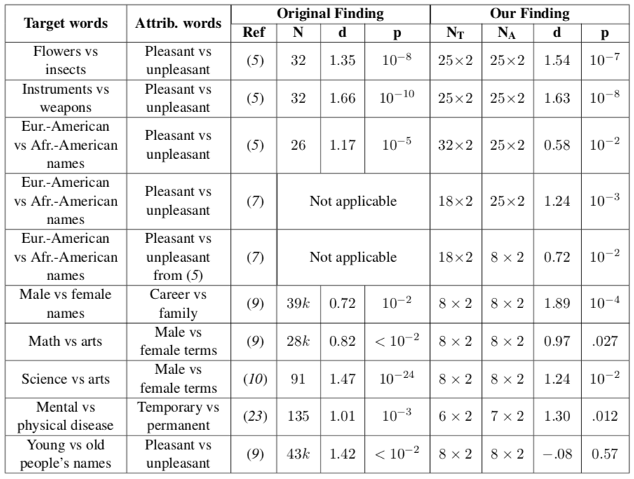

Demo - Word Embedding Association Test (WEAT) [Alpha Version]¶
Based on: Caliskan, A., Bryson, J. J., & Narayanan, A. (2017). Semantics derived automatically from language corpora contain human-like biases. Science, 356(6334), 183-186.
WEAT in ethically is in a alpha version, and therefore it is not yet
in the PyPI release. In order to use this coude, you should install
ethically from the dev branch by:
pip install --upgrade git+https://github.com/EthicallyAI/ethically.git@dev
Imports¶
from ethically.we import calc_all_weat
from ethically.we.data import load_w2v_small
For unzipping, converting and loading Glove and Word2Vec full models:
import os
import gzip
import shutil
from urllib.request import urlretrieve
from zipfile import ZipFile
from gensim.models import KeyedVectors
from gensim.scripts.glove2word2vec import glove2word2vec
Word2Vec - Only Lowercase and Most Frequent Words¶
model_w2v_small = load_w2v_small()
calc_all_weat(model_w2v_small, filter_by='model', with_original_finding=True,
with_pvalue=True, pvalue_kwargs={'method': 'approximate'})
| Target words | Attrib. words | Nt | Na | s | d | p | original_N | original_d | original_p | |
|---|---|---|---|---|---|---|---|---|---|---|
| 0 | Flowers vs. Insects | Pleasant vs. Unpleasant | 2x2 | 24x2 | 0.0949031 | 1.23443 | 1.6e-01 | 32 | 1.35 | 1e-8 |
| 1 | Instruments vs. Weapons | Pleasant vs. Unpleasant | 16x2 | 24x2 | 2.11433 | 1.58925 | 0 | 32 | 1.66 | 1e-10 |
| 2 | European American names vs. African American n... | Pleasant vs. Unpleasant | 6x2 | 24x2 | 0.287312 | 1.10003 | 2.6e-02 | 26 | 1.17 | 1e-5 |
| 3 | European American names vs. African American n... | Pleasant vs. Unpleasant | 18x2 | 24x2 | 0.952434 | 1.31962 | 0 | |||
| 4 | European American names vs. African American n... | Pleasant vs. Unpleasant | 18x2 | 8x2 | 0.538377 | 0.732444 | 1.8e-02 | |||
| 5 | Male names vs. Female names | Career vs. Family | 1x2 | 8x2 | 0.247673 | 2 | 0 | 39k | 0.72 | < 1e-2 |
| 6 | Math vs. Arts | Male terms vs. Female terms | 7x2 | 8x2 | 0.184416 | 0.718851 | 1.0e-01 | 28k | 0.82 | < 1e-2 |
| 7 | Science vs. Arts | Male terms vs. Female terms | 6x2 | 8x2 | 0.370207 | 1.35016 | 7.0e-03 | 91 | 1.47 | 1e-24 |
| 8 | Mental disease vs. Physical disease | Temporary vs. Permanent | 6x2 | 5x2 | 0.590304 | 1.22442 | 2.0e-02 | 135 | 1.01 | 1e-3 |
| 9 | Young people’s names vs. Old people’s names | Pleasant vs. Unpleasant | 0x2 | 7x2 | 43k | 1.42 | < 1e-2 |
For the two next sections, we need the full Glove and Word2Vec words embedding, as used in the original paper. Note that it might take a while to download, extract and load these models.¶
Glove - Common Crawl (840B tokens, 2.2M vocab, cased, 300d vectors, 2.03 GB download)¶
Download the Glove model: http://nlp.stanford.edu/data/glove.840B.300d.zip
if not os.path.exists('glove.840B.300d.w2v.txt'):
if not os.path.exists('glove.840B.300d.txt'):
assert os.path.exists('glove.840B.300d.zip')
print('Unzipping...')
with ZipFile('glove.840B.300d.zip', 'r') as zip_ref:
zip_ref.extractall('.')
print('Converting to Word2Vec format...')
glove2word2vec('glove.840B.300d.txt', 'glove.840B.300d.w2v.txt');
glove_model = KeyedVectors.load_word2vec_format('glove.840B.300d.w2v.txt')
calc_all_weat(glove_model, filter_by='data', with_original_finding=True,
with_pvalue=True, pvalue_kwargs={'method': 'approximate'})
| Target words | Attrib. words | Nt | Na | s | d | p | original_N | original_d | original_p | |
|---|---|---|---|---|---|---|---|---|---|---|
| 0 | Flowers vs. Insects | Pleasant vs. Unpleasant | 25x2 | 25x2 | 3.87 | 1.50 | 0 | 32 | 1.35 | 1e-8 |
| 1 | Instruments vs. Weapons | Pleasant vs. Unpleasant | 25x2 | 25x2 | 3.85 | 1.52 | 0 | 32 | 1.66 | 1e-10 |
| 2 | European American names vs. African American n... | Pleasant vs. Unpleasant | 32x2 | 25x2 | 2.92 | 1.43 | 0 | 26 | 1.17 | 1e-5 |
| 3 | European American names vs. African American n... | Pleasant vs. Unpleasant | 16x2 | 25x2 | 1.30 | 1.53 | 0 | |||
| 4 | European American names vs. African American n... | Pleasant vs. Unpleasant | 16x2 | 8x2 | 1.11 | 1.25 | 0 | |||
| 5 | Male names vs. Female names | Career vs. Family | 8x2 | 8x2 | 1.80 | 1.87 | 0 | 39k | 0.72 | < 1e-2 |
| 6 | Math vs. Arts | Male terms vs. Female terms | 8x2 | 8x2 | 0.23 | 1.05 | 2.2e-02 | 28k | 0.82 | < 1e-2 |
| 7 | Science vs. Arts | Male terms vs. Female terms | 8x2 | 8x2 | 0.40 | 1.27 | 2.0e-03 | 91 | 1.47 | 1e-24 |
| 8 | Mental disease vs. Physical disease | Temporary vs. Permanent | 6x2 | 7x2 | 0.90 | 1.63 | 0 | 135 | 1.01 | 1e-3 |
| 9 | Young people’s names vs. Old people’s names | Pleasant vs. Unpleasant | 8x2 | 8x2 | 0.59 | 1.45 | 1.0e-03 | 43k | 1.42 | < 1e-2 |
Results from the paper: 
Word2Vec - Google News dataset (100B tokens, 3M vocab, cased, 300d vectors, 1.65GB download)¶
Download the Word2Vec model: https://code.google.com/archive/p/word2vec/
if not os.path.exists('GoogleNews-vectors-negative300.bin'):
assert os.path.exists('GoogleNews-vectors-negative300.bin.gz')
print('Unzipping...')
with gzip.open('GoogleNews-vectors-negative300.bin.gz', 'r') as f_gz:
with open('GoogleNews-vectors-negative300.bin', 'wb') as f_bin:
shutil.copyfileobj(f_gz, f_bin)
w2v_model = KeyedVectors.load_word2vec_format('GoogleNews-vectors-negative300.bin',
binary=True)
calc_all_weat(w2v_model, filter_by='model', with_original_finding=True,
with_pvalue=True, pvalue_kwargs={'method': 'approximate'})
| Target words | Attrib. words | Nt | Na | s | d | p | original_N | original_d | original_p | |
|---|---|---|---|---|---|---|---|---|---|---|
| 0 | Flowers vs. Insects | Pleasant vs. Unpleasant | 25x2 | 25x2 | 3.23 | 1.55 | 0 | 32 | 1.35 | 1e-8 |
| 1 | Instruments vs. Weapons | Pleasant vs. Unpleasant | 24x2 | 25x2 | 3.82 | 1.66 | 0 | 32 | 1.66 | 1e-10 |
| 2 | European American names vs. African American n... | Pleasant vs. Unpleasant | 47x2 | 25x2 | 1.14 | 0.55 | 3.0e-03 | 26 | 1.17 | 1e-5 |
| 3 | European American names vs. African American n... | Pleasant vs. Unpleasant | 18x2 | 25x2 | 0.86 | 1.27 | 0 | |||
| 4 | European American names vs. African American n... | Pleasant vs. Unpleasant | 18x2 | 8x2 | 0.50 | 0.71 | 2.0e-02 | |||
| 5 | Male names vs. Female names | Career vs. Family | 8x2 | 8x2 | 2.04 | 1.93 | 0 | 39k | 0.72 | < 1e-2 |
| 6 | Math vs. Arts | Male terms vs. Female terms | 8x2 | 8x2 | 0.27 | 0.91 | 3.7e-02 | 28k | 0.82 | < 1e-2 |
| 7 | Science vs. Arts | Male terms vs. Female terms | 8x2 | 8x2 | 0.44 | 1.27 | 2.0e-03 | 91 | 1.47 | 1e-24 |
| 8 | Mental disease vs. Physical disease | Temporary vs. Permanent | 6x2 | 6x2 | 0.68 | 1.45 | 7.0e-03 | 135 | 1.01 | 1e-3 |
| 9 | Young people’s names vs. Old people’s names | Pleasant vs. Unpleasant | 8x2 | 7x2 | -0.14 | -0.38 | 7.5e-01 | 43k | 1.42 | < 1e-2 |
Results from the paper:
Calculate WEAT on pleasant-unpleasant attributes with chosen targets (Experimental)¶
from ethically.we import calc_weat_pleasant_unpleasant_attribute
targets = {'first_target': {'name': 'Citizen',
'words': ['citizen', 'citizenship', 'nationality', 'native', 'national', 'countryman',
'inhabitant', 'resident']},
'second_target': {'name': 'Immigrant',
'words': ['immigrant', 'immigration', 'foreigner', 'nonnative', 'noncitizen',
'relocatee', 'newcomer']}}
calc_weat_pleasant_unpleasant_attribute(w2v_model, **targets)
{'Attrib. words': 'Pleasant vs. Unpleasant',
'Na': '25x2',
'Nt': '6x2',
'Target words': 'Citizen vs. Immigrant',
'd': 0.71920586,
'p': 0.135,
's': 0.23210221529006958}